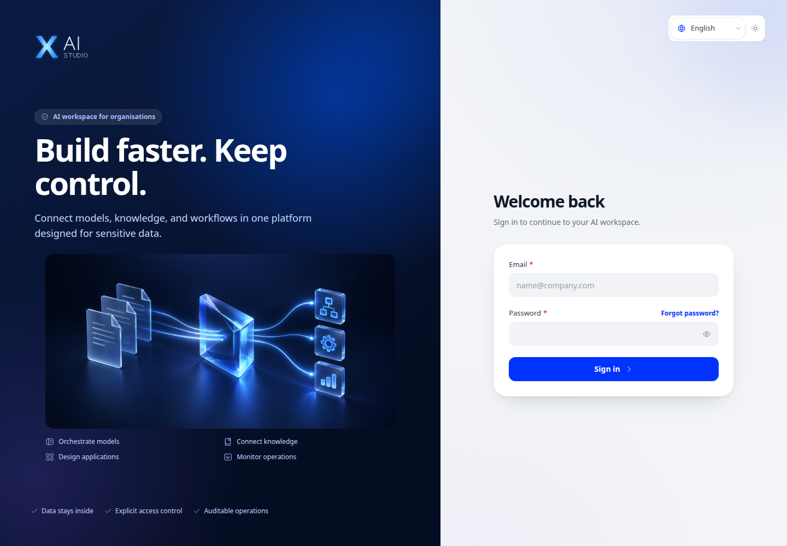
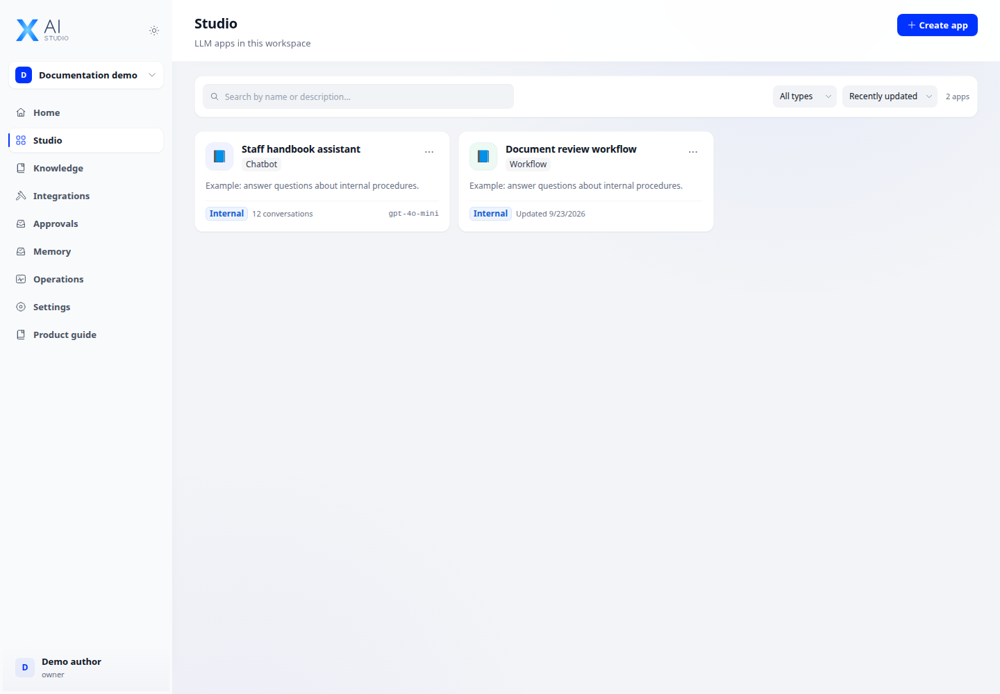
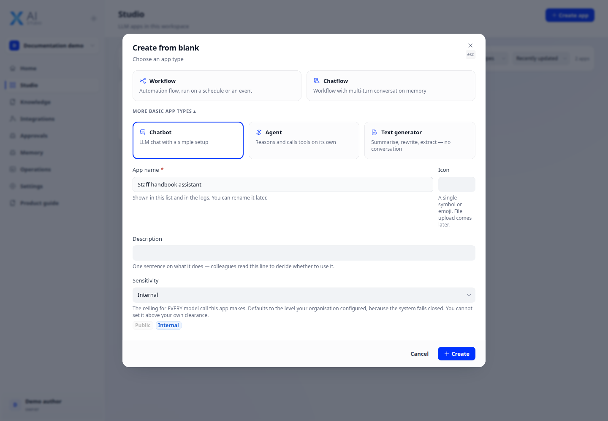
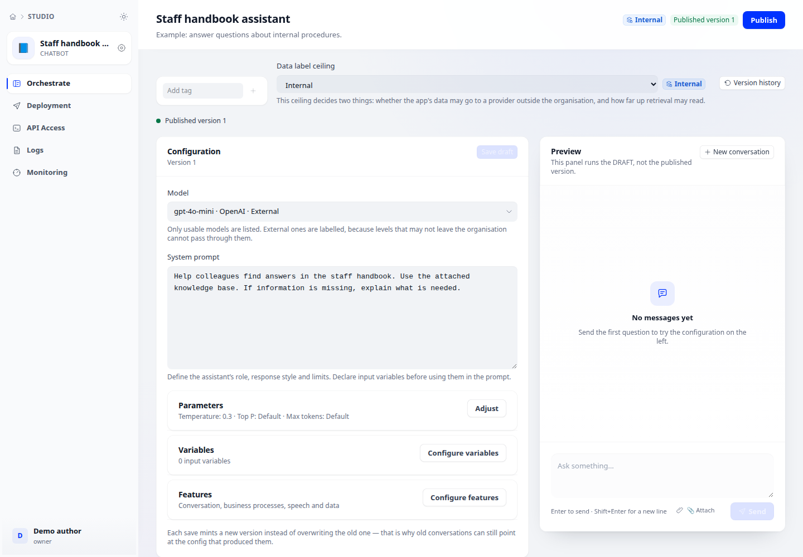

Create your first application
Build a chatbot, agent, chatflow or workflow.
Before you begin
This guide stays on xdev.asia. To perform the task, use an account in your organization’s AI Studio workspace with access to this feature. Screenshots show a demonstration workspace; names and data are examples.

Find the screen
Build a chatbot, agent, chatflow or workflow.

Step 1
Open Studio and create an application. Choose Chatbot for a conversational assistant, Agent for tool-assisted tasks, or Chatflow/Workflow for a visual flow.

Step 2
Name the app, choose a model and write instructions describing its role, allowed sources and expected response format. Configure its sensitivity level for the data it will handle.

Step 3
Test representative questions in the preview, including missing information and invalid inputs. Save your changes; publish only after checking the result.
Check your result
The app appears in Studio and its preview opens. Your saved instructions remain after you reopen the app. A draft is not yet available to end users.